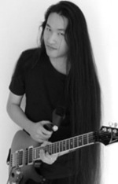
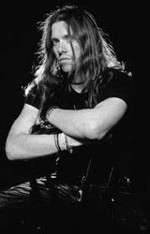
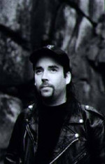
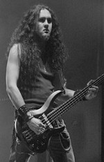
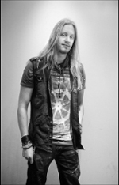
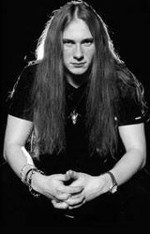

Mitglieder
DragonForce hat über die Zeit viele verschiedene Mitglieder gehabt. Nachfolgend sind die aktuellen Mitglieder ein wenig beschrieben und bebildert.
Herman Li
Herman Li wurde am 3 Oktober 1976 in China als Hanyu Pinyin geboren. Er ist Gitarrist bei DragonForce.
Sam Totman
Sam Totman wurde am 26. April 1980 in London geboren. Schon früh ist er nach Neuseeland gezogen. Er ist wie Herman Li Gitarrist bei DragonForce und ist auch hauptverantwortlich für die Lyrics bei ihren Songs.
Dave Mackintosh
Dave ist der Schlagzeuger bei DragonForce. Er ist 1977 in Schottland geboren.
Fréderic Leclerq
Fréderic wurde am 23 Juni 1978 in Frankreich geboren. Er ist als Bassist und auch Background-Sänger in der Band tätig.
Marc Hudson
Marc Hudson ist in England geboren und ist als Leadsänger bei DragonForce tätig. Er kam 2010 zur Band als der vorherige Leadsänger "ZP Theart" die Band verlassen hat.
Vadim Pruzhanov
Vadim wurde in Ukraine geboren und ist später nach England gezogen. Er übernimmt die Rolle des Keyboard-Player in der Band und ist manchmal auch als Background-Sänger im Einsatz.